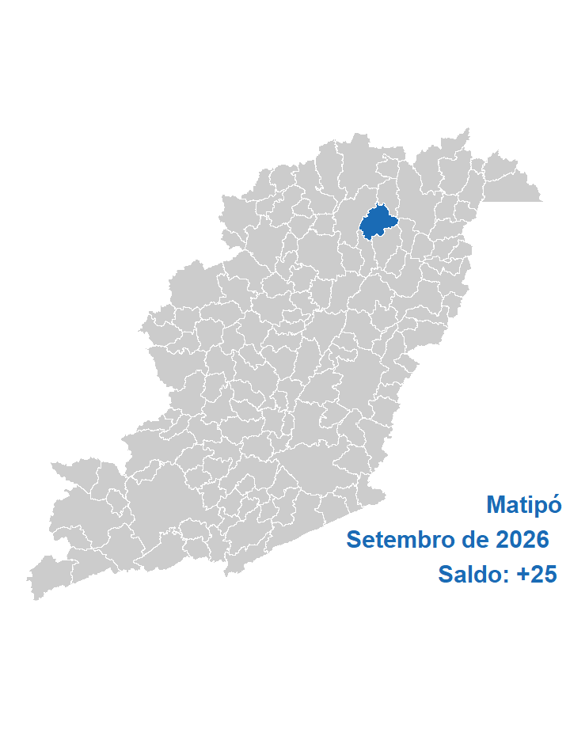
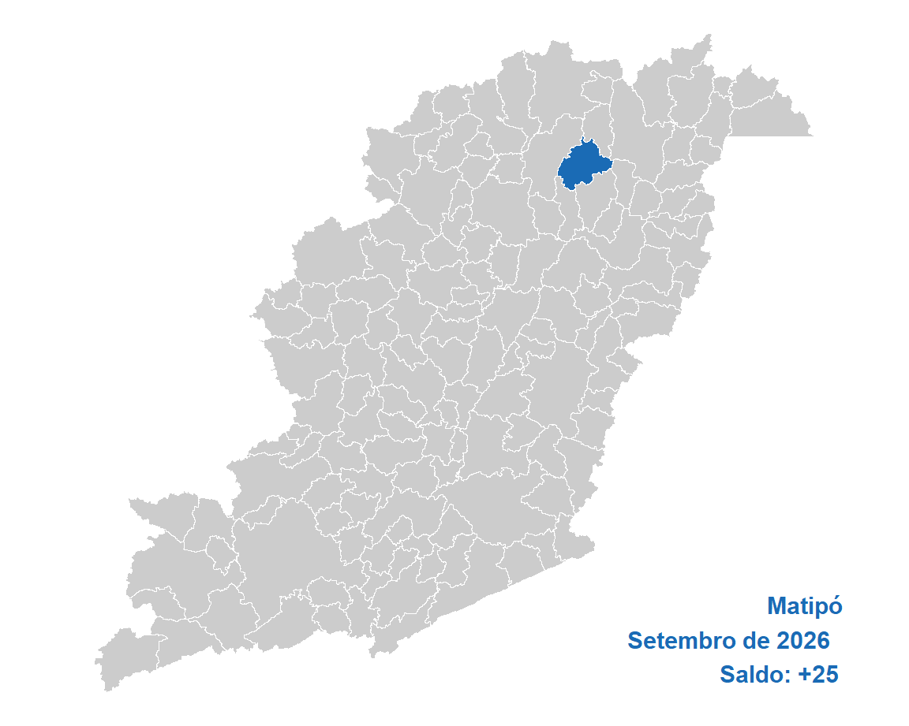

| Ano | Brasil | Estado | Mesorregião | Microrregião | Município |
|---|---|---|---|---|---|
| 2026 | 121.305 | 8.102 | 1.483 | 202 | 25 |
| 2025 | 214.609 | 11.828 | 1.004 | 267 | 33 |
| 2024 | 252.277 | 16.171 | 2.023 | 110 | -28 |
| 2023 | 204.771 | 11.849 | 511 | 88 | 11 |
| 2022 | 278.567 | 21.956 | 1.316 | -159 | 9 |
| 2021 | 330.133 | 26.058 | 1.725 | 198 | -13 |
| 2020 | 299.724 | 31.194 | 2.230 | 397 | -9 |
| 2019 | 157.213 | 3.841 | 243 | -344 | -9 |
| 2018 | 137.336 | 5.200 | 6 | -545 | -45 |
| 2017 | 34.392 | -4.291 | 141 | -241 | 3 |
| 2016 | -39.282 | -16.238 | -1.582 | -663 | -25 |
| 2015 | -95.602 | -32.423 | -1.893 | -618 | -88 |
| 2014 | 123.785 | -840 | -216 | 101 | 13 |
| 2013 | 211.068 | 6.925 | 828 | -534 | -117 |
| 2012 | 150.334 | -1.180 | -479 | -399 | 1 |
| 2011 | 209.078 | 3.354 | 811 | -830 | -189 |
| 2010 | 246.875 | 8.448 | 2.124 | 44 | 14 |
| 2009 | 252.617 | 7.451 | 2.519 | 139 | -49 |
| 2008 | 282.841 | 12.040 | -44 | -859 | -2 |
| 2007 | 251.168 | 2.258 | -438 | -1.016 | -205 |
| Ano | Mes | Brasil | Estado | Mesorregião | Microrregião | Município |
|---|---|---|---|---|---|---|
| 2026 | Setembro | 121.305 | 8.102 | 1.483 | 202 | 25 |
| 2026 | Agosto | 161.062 | 8.899 | 1.785 | 363 | 5 |
| 2026 | Julho | 56.007 | 4.383 | 595 | -61 | -19 |
| 2026 | Junho | 136.423 | 20.734 | 1.120 | 114 | 19 |
| 2026 | Maio | 81.475 | 9.772 | 129 | -184 | -8 |
| 2026 | Abril | 79.266 | 8.473 | 609 | -104 | -16 |
| 2026 | Março | 227.736 | 37.773 | 1.747 | 99 | -8 |
| 2026 | Fevereiro | 267.915 | 24.138 | 114 | 209 | 1 |
| 2026 | Janeiro | 117.725 | 7.503 | 66 | 40 | 0 |
| 2025 | Dezembro | -635.579 | -74.187 | -6.017 | -401 | -20 |
| 2025 | Novembro | 81.164 | -9.104 | 863 | 99 | -3 |
| 2025 | Outubro | 92.574 | -4.284 | 829 | 149 | 2 |
| Acum. 2026 | 1.248.914 | 129.777 | 7.648 | 678 | -1 | |
| Acumulado 12m | 787.073 | 42.202 | 3.323 | 525 | -22 |
| CBO | Brasil | Estado | Mesorregião | Microrregião | Município |
|---|---|---|---|---|---|
| Forças armadas | 7 | 1 | 1 | NA | NA |
| Poder público | -10.739 | -1.172 | -20 | -9 | -1 |
| Ciências e artes | 4.334 | 330 | 144 | 11 | -1 |
| Técnicos de nível médio | 11.614 | 1.539 | 168 | 4 | -1 |
| Serviços administrativo | 26.878 | 5.689 | 355 | 100 | 5 |
| Serviços e comércio | 50.360 | 6.230 | 609 | 112 | 19 |
| Agropecuária | 7.561 | -7.620 | -125 | -114 | -1 |
| Bens e serviços industriais 1 | 36.684 | 3.617 | 226 | 73 | 3 |
| Bens e serviços industriais 2 | -6.343 | -111 | 19 | 13 | 1 |
| Reparação e manutenção | 949 | -401 | 106 | 12 | 1 |
| CNAE | Brasil | Estado | Mesorregião | Microrregião | Município |
|---|---|---|---|---|---|
| Agropecuária/florestal | -4.381 | -8.221 | -147 | -108 | -3 |
| Extrativismo | -20 | -481 | 37 | -3 | -2 |
| Indústria de transformação | 15.744 | 579 | -30 | 30 | -3 |
| Eletricidade e gás | 1.177 | 41 | 7 | NA | NA |
| Água e esgoto | 2.384 | 448 | -21 | -2 | NA |
| Construção | 9.468 | 1.680 | 67 | 15 | -3 |
| Comércio de automotores | 15.697 | 3.212 | 565 | 129 | 27 |
| Transporte e correios | 13.240 | 1.181 | 91 | 17 | 3 |
| Alojamento e alimentação | 10.581 | 1.256 | 131 | 16 | 5 |
| Comunicação | 4.628 | 1.854 | 15 | 3 | -1 |
| Atividades financeiras | -596 | 146 | 11 | -1 | 1 |
| Imobiliárias | 521 | 28 | -6 | -1 | NA |
| Atividades científicas e técnicas | 6.540 | 294 | 54 | -12 | 0 |
| Atividades administrativas | 18.386 | 1.591 | 260 | 39 | 0 |
| Administração pública | 1.090 | 11 | 12 | NA | NA |
| Educação | 9.538 | 2.135 | 103 | 14 | 1 |
| Saúde e serviços sociais | 15.403 | 1.775 | 265 | 51 | 1 |
| Artes, cultura e esportes | 1.570 | 228 | 41 | 5 | NA |
| Serviços | 327 | 344 | 31 | 10 | -1 |
| Domésticos | 14 | 5 | NA | NA | NA |
| Organismos internacionais | -1 | NA | NA | NA | NA |
| Não classificado | -5 | -4 | -3 | NA | NA |
| Educ | Brasil | Estado | Mesorregião | Microrregião | Município |
|---|---|---|---|---|---|
| Analfabeto | 1.835 | 0 | -11 | 0 | NA |
| Até o 5º ano incompleto | 4.523 | -804 | -1 | -22 | -1 |
| 5º ano completo | -195 | -859 | -66 | -28 | 1 |
| 6º ano completo até o 9º ano incompleto | 879 | -526 | 63 | 10 | 1 |
| Fundamental completo | -1.364 | -1.224 | -57 | 10 | -2 |
| Médio incompleto | 17.258 | 2.822 | 239 | 67 | 5 |
| Médio completo | 82.812 | 6.288 | 1.049 | 149 | 20 |
| Superior incompleto | 5.227 | 986 | 61 | -2 | -2 |
| Superior completo | 10.330 | 1.419 | 206 | 18 | 3 |
| Idade | Brasil | Estado | Mesorregião | Microrregião | Município |
|---|---|---|---|---|---|
| 10 a 14 anos | 2.483 | 529 | 43 | 9 | NA |
| 15 a 17 anos | 23.954 | 4.936 | 418 | 71 | 3 |
| 18 a 24 anos | 79.856 | 6.043 | 736 | 107 | 14 |
| 25 a 29 anos | 7.177 | -667 | 6 | 12 | 5 |
| 30 a 39 anos | 7.537 | -379 | 192 | 25 | 3 |
| 40 a 49 anos | 10.561 | 232 | 212 | -2 | 0 |
| 50 a 64 anos | -6.095 | -1.915 | -73 | -18 | -1 |
| 65 anos ou mais | -5.962 | -781 | -59 | -1 | NA |
| NA | 1.794 | 104 | 8 | -1 | 1 |
| Raça | Brasil | Estado | Mesorregião | Microrregião | Município |
|---|---|---|---|---|---|
| Indígena | 15.493 | 3.090 | 365 | 64 | 4 |
| Branca | 17.416 | 1.288 | 212 | 4 | -3 |
| 3 | 96.805 | 4.887 | 1.023 | 141 | 23 |
| Preta | 229 | -39 | -27 | 5 | 2 |
| 5 | 80 | -76 | -4 | 0 | NA |
| Amarela | -8.304 | -988 | -80 | -12 | -1 |
| 9 | -414 | -60 | -6 | NA | NA |
| Gênero | Brasil | Estado | Mesorregião | Microrregião | Município |
|---|---|---|---|---|---|
| Homens | 59.129 | 1.650 | 670 | 71 | 4 |
| Mulheres | 62.176 | 6.452 | 813 | 131 | 21 |
| Grande_setor | Brasil | Estado | Mesorregião | Microrregião | Município |
|---|---|---|---|---|---|
| Indústria | 19.285 | 587 | -7 | 25 | -5 |
| Construção civil | 9.468 | 1.680 | 67 | 15 | -3 |
| Comércio | 15.697 | 3.212 | 565 | 129 | 27 |
| Serviços | 81.241 | 10.848 | 1.008 | 141 | 9 |
| Agropecuária, extrativismo vegetal,caça e pesca | -4.381 | -8.221 | -147 | -108 | -3 |
| Não classificado | -5 | -4 | -3 | NA | NA |
| Setores | Brasil | Estado | Mesorregião | Microrregião | Município |
|---|---|---|---|---|---|
| Extrativismo mineral | -20 | -481 | 37 | -3 | -2 |
| Indústria de transformação | 15.744 | 579 | -30 | 30 | -3 |
| Serviços industriais de utilidade pública | 3.561 | 489 | -14 | -2 | NA |
| Construção civil | 9.468 | 1.680 | 67 | 15 | -3 |
| Comércio | 15.697 | 3.212 | 565 | 129 | 27 |
| Serviços | 80.152 | 10.837 | 996 | 141 | 9 |
| Adiminstração pública | 1.084 | 7 | 9 | NA | NA |
| Agropecuária, extrativismo vegetal, caça e pesca | -4.381 | -8.221 | -147 | -108 | -3 |
| Ano | Brasil | Estado | Mesorregião | Microrregião | Município |
|---|---|---|---|---|---|
| 2002 | 28.683.913 | 3.046.362 | 285.345 | 20.769 | 1.186 |
| 2003 | 29.544.927 | 3.138.026 | 288.853 | 20.254 | 1.049 |
| 2004 | 31.407.576 | 3.332.775 | 298.898 | 21.005 | 1.107 |
| 2005 | 33.238.617 | 3.592.560 | 322.026 | 24.461 | 1.086 |
| 2006 | 32.903.959 | 3.744.043 | 337.470 | 26.159 | 1.224 |
| 2007 | 37.607.430 | 4.036.203 | 354.945 | 26.761 | 1.336 |
| 2008 | 39.441.566 | 4.184.183 | 369.202 | 27.824 | 1.391 |
| 2009 | 41.207.546 | 4.350.839 | 388.196 | 30.717 | 1.555 |
| 2010 | 44.068.355 | 4.646.891 | 408.037 | 31.834 | 1.428 |
| 2011 | 46.310.631 | 4.850.976 | 429.166 | 34.309 | 1.812 |
| 2012 | 47.458.712 | 4.928.225 | 439.074 | 35.094 | 1.886 |
| 2013 | 48.948.433 | 5.057.080 | 454.446 | 36.914 | 2.150 |
| 2014 | 49.571.510 | 5.071.906 | 456.058 | 39.264 | 2.234 |
| 2015 | 48.060.807 | 4.821.116 | 445.516 | 38.952 | 2.110 |
| 2016 | 46.060.198 | 4.628.701 | 426.384 | 36.915 | 1.754 |
| 2017 | 46.281.590 | 4.710.919 | 435.944 | 38.913 | 2.432 |
| 2018 | 46.631.115 | 4.760.830 | 436.333 | 40.174 | 2.114 |
| 2019 | 46.748.356 | 4.856.025 | 435.241 | 39.715 | 2.118 |
| 2020 | 46.236.176 | 4.814.874 | 423.457 | 39.001 | 1.745 |
| 2021 | 48.728.871 | 5.148.435 | 448.511 | 41.478 | 2.240 |
| 2022 | 52.788.939 | 5.523.279 | 476.377 | 45.681 | 2.479 |
| 2023 | 54.705.614 | 5.633.160 | 497.668 | 46.815 | 2.893 |
| 2024 | 57.789.526 | 6.094.585 | 511.827 | 47.712 | 2.914 |
| 2025 | 60.688.704 | 6.325.291 | 538.504 | 50.579 | 2.654 |
| Ano | Brasil | Estado | Mesorregião | Microrregião |
|---|---|---|---|---|
| 2002 | 0,0041 | 0,0389 | 0,4156 | 5,7104 |
| 2003 | 0,0036 | 0,0334 | 0,3632 | 5,1792 |
| 2004 | 0,0035 | 0,0332 | 0,3704 | 5,2702 |
| 2005 | 0,0033 | 0,0302 | 0,3372 | 4,4397 |
| 2006 | 0,0037 | 0,0327 | 0,3627 | 4,6791 |
| 2007 | 0,0036 | 0,0331 | 0,3764 | 4,9923 |
| 2008 | 0,0035 | 0,0332 | 0,3768 | 4,9993 |
| 2009 | 0,0038 | 0,0357 | 0,4006 | 5,0623 |
| 2010 | 0,0032 | 0,0307 | 0,3500 | 4,4858 |
| 2011 | 0,0039 | 0,0374 | 0,4222 | 5,2814 |
| 2012 | 0,0040 | 0,0383 | 0,4295 | 5,3741 |
| 2013 | 0,0044 | 0,0425 | 0,4731 | 5,8243 |
| 2014 | 0,0045 | 0,0440 | 0,4898 | 5,6897 |
| 2015 | 0,0044 | 0,0438 | 0,4736 | 5,4169 |
| 2016 | 0,0038 | 0,0379 | 0,4114 | 4,7515 |
| 2017 | 0,0053 | 0,0516 | 0,5579 | 6,2498 |
| 2018 | 0,0045 | 0,0444 | 0,4845 | 5,2621 |
| 2019 | 0,0045 | 0,0436 | 0,4866 | 5,3330 |
| 2020 | 0,0038 | 0,0362 | 0,4121 | 4,4742 |
| 2021 | 0,0046 | 0,0435 | 0,4994 | 5,4005 |
| 2022 | 0,0047 | 0,0449 | 0,5204 | 5,4268 |
| 2023 | 0,0053 | 0,0514 | 0,5813 | 6,1796 |
| 2024 | 0,0050 | 0,0478 | 0,5693 | 6,1075 |
| 2025 | 0,0044 | 0,0420 | 0,4928 | 5,2472 |
| Ano | Brasil | Estado | Mesorregião | Microrregião | Município |
|---|---|---|---|---|---|
| 2002 | NA | NA | NA | NA | NA |
| 2003 | 3,00 | 3,01 | 1,23 | -2,48 | -11,55 |
| 2004 | 6,30 | 6,21 | 3,48 | 3,71 | 5,53 |
| 2005 | 5,83 | 7,79 | 7,74 | 16,45 | -1,90 |
| 2006 | -1,01 | 4,22 | 4,80 | 6,94 | 12,71 |
| 2007 | 14,29 | 7,80 | 5,18 | 2,30 | 9,15 |
| 2008 | 4,88 | 3,67 | 4,02 | 3,97 | 4,12 |
| 2009 | 4,48 | 3,98 | 5,14 | 10,40 | 11,79 |
| 2010 | 6,94 | 6,80 | 5,11 | 3,64 | -8,17 |
| 2011 | 5,09 | 4,39 | 5,18 | 7,77 | 26,89 |
| 2012 | 2,48 | 1,59 | 2,31 | 2,29 | 4,08 |
| 2013 | 3,14 | 2,61 | 3,50 | 5,19 | 14,00 |
| 2014 | 1,27 | 0,29 | 0,35 | 6,37 | 3,91 |
| 2015 | -3,05 | -4,94 | -2,31 | -0,79 | -5,55 |
| 2016 | -4,16 | -3,99 | -4,29 | -5,23 | -16,87 |
| 2017 | 0,48 | 1,78 | 2,24 | 5,41 | 38,65 |
| 2018 | 0,76 | 1,06 | 0,09 | 3,24 | -13,08 |
| 2019 | 0,25 | 2,00 | -0,25 | -1,14 | 0,19 |
| 2020 | -1,10 | -0,85 | -2,71 | -1,80 | -17,61 |
| 2021 | 5,39 | 6,93 | 5,92 | 6,35 | 28,37 |
| 2022 | 8,33 | 7,28 | 6,21 | 10,13 | 10,67 |
| 2023 | 3,63 | 1,99 | 4,47 | 2,48 | 16,70 |
| 2024 | 5,64 | 8,19 | 2,85 | 1,92 | 0,73 |
| 2025 | 5,02 | 3,79 | 5,21 | 6,01 | -8,92 |
| Ano | Brasil | Estado | Mesorregião | Microrregião | Município |
|---|---|---|---|---|---|
| 2002 | 0,00 | 0,00 | 0,00 | 0,00 | 0,00 |
| 2003 | 3,00 | 3,01 | 1,23 | -2,48 | -11,55 |
| 2004 | 9,50 | 9,40 | 4,75 | 1,14 | -6,66 |
| 2005 | 15,88 | 17,93 | 12,85 | 17,78 | -8,43 |
| 2006 | 14,71 | 22,90 | 18,27 | 25,95 | 3,20 |
| 2007 | 31,11 | 32,49 | 24,39 | 28,85 | 12,65 |
| 2008 | 37,50 | 37,35 | 29,39 | 33,97 | 17,28 |
| 2009 | 43,66 | 42,82 | 36,04 | 47,90 | 31,11 |
| 2010 | 53,63 | 52,54 | 43,00 | 53,28 | 20,40 |
| 2011 | 61,45 | 59,24 | 50,40 | 65,19 | 52,78 |
| 2012 | 65,45 | 61,77 | 53,87 | 68,97 | 59,02 |
| 2013 | 70,65 | 66,00 | 59,26 | 77,74 | 81,28 |
| 2014 | 72,82 | 66,49 | 59,83 | 89,05 | 88,36 |
| 2015 | 67,55 | 58,26 | 56,13 | 87,55 | 77,91 |
| 2016 | 60,58 | 51,94 | 49,43 | 77,74 | 47,89 |
| 2017 | 61,35 | 54,64 | 52,78 | 87,36 | 105,06 |
| 2018 | 62,57 | 56,28 | 52,91 | 93,43 | 78,25 |
| 2019 | 62,98 | 59,40 | 52,53 | 91,22 | 78,58 |
| 2020 | 61,19 | 58,05 | 48,40 | 87,78 | 47,13 |
| 2021 | 69,88 | 69,00 | 57,18 | 99,71 | 88,87 |
| 2022 | 84,04 | 81,31 | 66,95 | 119,95 | 109,02 |
| 2023 | 90,72 | 84,91 | 74,41 | 125,41 | 143,93 |
| 2024 | 101,47 | 100,06 | 79,37 | 129,73 | 145,70 |
| 2025 | 111,58 | 107,63 | 88,72 | 143,53 | 123,78 |
| Ano | Brasil | Estado | Mesorregião | Microrregião | Município |
|---|---|---|---|---|---|
| 2002 | 885,39 | 699,14 | 526,14 | 385,18 | 399,44 |
| 2003 | 985,30 | 783,42 | 585,15 | 462,48 | 525,43 |
| 2004 | 1.058,63 | 846,89 | 634,30 | 478,21 | 505,29 |
| 2005 | 1.135,85 | 904,05 | 685,47 | 546,31 | 636,59 |
| 2006 | 1.245,61 | 1.006,04 | 744,63 | 596,33 | 575,70 |
| 2007 | 1.301,87 | 1.065,81 | 802,71 | 658,45 | 611,12 |
| 2008 | 1.436,70 | 1.181,73 | 876,96 | 740,22 | 716,30 |
| 2009 | 1.535,74 | 1.273,12 | 963,89 | 786,40 | 780,45 |
| 2010 | 1.675,01 | 1.414,21 | 1.069,58 | 881,31 | 932,61 |
| 2011 | 1.827,45 | 1.560,35 | 1.172,93 | 979,03 | 968,76 |
| 2012 | 1.996,90 | 1.692,70 | 1.292,52 | 1.055,48 | 1.203,10 |
| 2013 | 2.177,60 | 1.861,57 | 1.399,74 | 1.211,00 | 1.434,85 |
| 2014 | 2.352,42 | 2.010,33 | 1.536,23 | 1.279,31 | 1.318,82 |
| 2015 | 2.541,18 | 2.165,84 | 1.645,82 | 1.408,47 | 1.401,17 |
| 2016 | 2.731,61 | 2.342,07 | 1.809,10 | 1.531,14 | 1.436,99 |
| 2017 | 2.850,41 | 2.440,03 | 1.918,43 | 1.627,52 | 1.468,06 |
| 2018 | 2.939,05 | 2.489,11 | 1.983,97 | 1.707,79 | 1.541,07 |
| 2019 | 2.921,13 | 2.495,23 | 1.953,96 | 1.771,39 | 1.641,26 |
| 2020 | 3.003,69 | 2.598,34 | 2.015,89 | 1.813,57 | 1.698,97 |
| 2021 | 3.295,76 | 2.889,99 | 2.268,66 | 2.128,09 | 1.787,05 |
| 2022 | 3.437,29 | 2.916,94 | 2.333,04 | 2.030,91 | 1.923,02 |
| 2023 | 3.383,32 | 3.022,90 | 2.472,81 | 2.134,10 | 2.096,76 |
| 2024 | 3.728,47 | 3.255,82 | 2.658,71 | 2.290,34 | 2.233,02 |
| 2025 | 3.760,69 | 3.221,18 | 2.794,52 | 2.378,14 | 2.402,22 |
| Ano | Estado | Mesorregião | Microrregião | Município |
|---|---|---|---|---|
| 2002 | 78,9650 | 59,4250 | 43,5040 | 45,1146 |
| 2003 | 79,5106 | 59,3880 | 46,9375 | 53,3272 |
| 2004 | 79,9994 | 59,9173 | 45,1728 | 47,7308 |
| 2005 | 79,5923 | 60,3491 | 48,0970 | 56,0455 |
| 2006 | 80,7669 | 59,7806 | 47,8743 | 46,2186 |
| 2007 | 81,8673 | 61,6586 | 50,5769 | 46,9418 |
| 2008 | 82,2528 | 61,0401 | 51,5221 | 49,8570 |
| 2009 | 82,8995 | 62,7641 | 51,2070 | 50,8194 |
| 2010 | 84,4297 | 63,8548 | 52,6151 | 55,6776 |
| 2011 | 85,3838 | 64,1840 | 53,5737 | 53,0115 |
| 2012 | 84,7663 | 64,7266 | 52,8558 | 60,2484 |
| 2013 | 85,4872 | 64,2790 | 55,6117 | 65,8912 |
| 2014 | 85,4578 | 65,3041 | 54,3828 | 56,0620 |
| 2015 | 85,2299 | 64,7662 | 55,4261 | 55,1385 |
| 2016 | 85,7394 | 66,2282 | 56,0525 | 52,6061 |
| 2017 | 85,6027 | 67,3036 | 57,0976 | 51,5035 |
| 2018 | 84,6910 | 67,5037 | 58,1069 | 52,4344 |
| 2019 | 85,4200 | 66,8905 | 60,6407 | 56,1857 |
| 2020 | 86,5048 | 67,1137 | 60,3781 | 56,5627 |
| 2021 | 87,6881 | 68,8357 | 64,5705 | 54,2226 |
| 2022 | 84,8615 | 67,8744 | 59,0845 | 55,9459 |
| 2023 | 89,3471 | 73,0881 | 63,0770 | 61,9733 |
| 2024 | 87,3232 | 71,3083 | 61,4283 | 59,8910 |
| 2025 | 85,6538 | 74,3088 | 63,2368 | 63,8772 |
| Grandes.Grupos.CBO | Brasil | Estado | Mesorregião | Microrregião | Município |
|---|---|---|---|---|---|
| Membros das Forças Armadas | 1.023.060 | 47.566 | 9 | 0 | 0 |
| (1,69) | (0,75) | (0,00) | (0,00) | (0,00) | |
| Membros superiores do poder público, dirigentes e gerentes | 3.137.751 | 360.178 | 21.212 | 2.146 | 91 |
| (5,17) | (5,69) | (3,94) | (4,24) | (3,43) | |
| Profissionais das ciências e das artes | 8.082.366 | 869.159 | 72.838 | 4.993 | 276 |
| (13,32) | (13,74) | (13,53) | (9,87) | (10,40) | |
| Técnicos de nível médio | 7.490.799 | 694.615 | 51.969 | 5.391 | 193 |
| (12,34) | (10,98) | (9,65) | (10,66) | (7,27) | |
| Trabalhadores de serviços administrativos | 10.962.407 | 1.063.788 | 88.206 | 8.615 | 457 |
| (18,06) | (16,82) | (16,38) | (17,03) | (17,22) | |
| Trabalhadores dos serviços, vendedores do comércio | 14.900.638 | 1.458.725 | 133.562 | 13.923 | 797 |
| (24,55) | (23,06) | (24,80) | (27,53) | (30,03) | |
| Trabalhadores agropecuários, florestais e da pesca | 1.730.851 | 284.510 | 18.253 | 1.818 | 172 |
| (2,85) | (4,50) | (3,39) | (3,59) | (6,48) | |
| Trabalhadores da produção de bens e serviços industriais (1) | 10.194.448 | 1.167.608 | 120.598 | 11.109 | 530 |
| (16,80) | (18,46) | (22,40) | (21,96) | (19,97) | |
| Trabalhadores da produção de bens e serviços industriais (2) | 1.837.241 | 207.082 | 18.253 | 1.640 | 81 |
| (3,03) | (3,27) | (3,39) | (3,24) | (3,05) | |
| Trabalhadores em serviços de reparação e manutenção | 1.329.143 | 172.060 | 13.604 | 944 | 57 |
| (2,19) | (2,72) | (2,53) | (1,87) | (2,15) | |
| Não classificados | 0 | 0 | 0 | 0 | 0 |
| (0,00) | (0,00) | (0,00) | (0,00) | (0,00) |
| CNAE | Brasil | Estado | Mesorregião | Microrregião | Município |
|---|---|---|---|---|---|
| Agropecuária/florestal | 1.834.199 | 304.905 | 17.745 | 1.990 | 169 |
| (3,02) | (4,82) | (3,30) | (3,93) | (6,37) | |
| Extrativismo | 291.006 | 78.433 | 1.450 | 190 | 50 |
| (0,48) | (1,24) | (0,27) | (0,38) | (1,88) | |
| Indústria de transformação | 8.219.022 | 897.638 | 93.611 | 3.869 | 143 |
| (13,54) | (14,19) | (17,38) | (7,65) | (5,39) | |
| Eletricidade e gás | 143.023 | 10.051 | 1.663 | 4 | 0 |
| (0,24) | (0,16) | (0,31) | (0,01) | (0,00) | |
| Água e esgoto | 445.867 | 37.176 | 4.027 | 453 | 2 |
| (0,73) | (0,59) | (0,75) | (0,90) | (0,08) | |
| Construção | 3.021.524 | 353.185 | 26.968 | 3.509 | 126 |
| (4,98) | (5,58) | (5,01) | (6,94) | (4,75) | |
| Comércio de automotores | 10.685.675 | 1.087.702 | 104.807 | 11.925 | 1.062 |
| (17,61) | (17,20) | (19,46) | (23,58) | (40,02) | |
| Transporte e correios | 2.914.830 | 302.795 | 26.433 | 2.107 | 82 |
| (4,80) | (4,79) | (4,91) | (4,17) | (3,09) | |
| Alojamento e alimentação | 2.309.875 | 214.090 | 18.741 | 1.508 | 62 |
| (3,81) | (3,38) | (3,48) | (2,98) | (2,34) | |
| Comunicação | 1.257.254 | 106.094 | 7.649 | 349 | 18 |
| (2,07) | (1,68) | (1,42) | (0,69) | (0,68) | |
| Atividades financeiras | 1.103.522 | 90.075 | 9.643 | 961 | 23 |
| (1,82) | (1,42) | (1,79) | (1,90) | (0,87) | |
| Imobiliárias | 205.311 | 19.633 | 1.636 | 101 | 3 |
| (0,34) | (0,31) | (0,30) | (0,20) | (0,11) | |
| Atividades científicas e técnicas | 1.733.759 | 174.504 | 12.957 | 1.654 | 25 |
| (2,86) | (2,76) | (2,41) | (3,27) | (0,94) | |
| Atividades administrativas | 6.413.013 | 539.474 | 30.487 | 1.797 | 37 |
| (10,57) | (8,53) | (5,66) | (3,55) | (1,39) | |
| Administração pública | 11.263.013 | 964.225 | 96.159 | 12.053 | 471 |
| (18,56) | (15,24) | (17,86) | (23,83) | (17,75) | |
| Educação | 3.677.922 | 629.298 | 27.261 | 1.647 | 255 |
| (6,06) | (9,95) | (5,06) | (3,26) | (9,61) | |
| Saúde e serviços sociais | 3.536.413 | 350.575 | 40.599 | 2.855 | 99 |
| (5,83) | (5,54) | (7,54) | (5,64) | (3,73) | |
| Artes, cultura e esportes | 369.805 | 37.471 | 4.116 | 196 | 4 |
| (0,61) | (0,59) | (0,76) | (0,39) | (0,15) | |
| Serviços | 1.254.845 | 127.821 | 12.549 | 3.411 | 23 |
| (2,07) | (2,02) | (2,33) | (6,74) | (0,87) | |
| Domésticos | 964 | 112 | 3 | 0 | 0 |
| (0,00) | (0,00) | (0,00) | (0,00) | (0,00) | |
| Organismos internacionais | 4.321 | 34 | 0 | 0 | 0 |
| (0,01) | (0,00) | (0,00) | (0,00) | (0,00) | |
| Não classificados | 3.541 | 0 | 0 | 0 | 0 |
| (0,01) | (0,00) | (0,00) | (0,00) | (0,00) |
| Escolaridade | Brasil | Estado | Mesorregião | Microrregião | Município |
|---|---|---|---|---|---|
| Analfabeto | 242.180 | 21.011 | 2.070 | 253 | 7 |
| (0,40) | (0,33) | (0,38) | (0,50) | (0,26) | |
| Até o 5º ano incompleto | 1.035.160 | 134.185 | 12.571 | 1.347 | 76 |
| (1,71) | (2,12) | (2,33) | (2,66) | (2,86) | |
| 5º ano completo | 823.978 | 139.209 | 17.022 | 962 | 72 |
| (1,36) | (2,20) | (3,16) | (1,90) | (2,71) | |
| 6º ao 9º ano incompleto | 2.024.619 | 258.265 | 25.729 | 2.157 | 148 |
| (3,34) | (4,08) | (4,78) | (4,26) | (5,58) | |
| Fundamental completo | 3.614.972 | 387.470 | 42.037 | 3.233 | 180 |
| (5,96) | (6,13) | (7,81) | (6,39) | (6,78) | |
| Médio incompleto | 3.074.545 | 383.317 | 36.771 | 5.129 | 321 |
| (5,07) | (6,06) | (6,83) | (10,14) | (12,09) | |
| Médio completo | 30.539.841 | 3.062.354 | 257.337 | 25.976 | 1.290 |
| (50,32) | (48,41) | (47,79) | (51,36) | (48,61) | |
| Superior incompleto | 1.830.141 | 175.780 | 13.327 | 1.069 | 59 |
| (3,02) | (2,78) | (2,47) | (2,11) | (2,22) | |
| Superior completo | 17.503.268 | 1.763.700 | 131.640 | 10.453 | 501 |
| (28,84) | (27,88) | (24,45) | (20,67) | (18,88) | |
| Não classificados | 0 | 0 | 0 | 0 | 0 |
| (0,00) | (0,00) | (0,00) | (0,00) | (0,00) |
| Faixas.Etárias | Brasil | Estado | Mesorregião | Microrregião | Município |
|---|---|---|---|---|---|
| 10 a 14 anos | 10.869 | 1.200 | 71 | 9 | 0 |
| (0,02) | (0,02) | (0,01) | (0,02) | (0,00) | |
| 15 a 17 anos | 438.844 | 62.301 | 3.901 | 625 | 58 |
| (0,72) | (0,98) | (0,72) | (1,24) | (2,19) | |
| 18 a 24 anos | 7.625.654 | 784.798 | 66.180 | 8.746 | 543 |
| (12,57) | (12,41) | (12,29) | (17,29) | (20,46) | |
| 25 a 29 anos | 7.709.606 | 785.700 | 67.923 | 7.408 | 439 |
| (12,70) | (12,42) | (12,61) | (14,65) | (16,54) | |
| 30 a 39 anos | 15.867.910 | 1.620.414 | 138.896 | 13.196 | 741 |
| (26,15) | (25,62) | (25,79) | (26,09) | (27,92) | |
| 40 a 49 anos | 15.437.841 | 1.607.793 | 133.722 | 11.448 | 533 |
| (25,44) | (25,42) | (24,83) | (22,63) | (20,08) | |
| 50 a 64 anos | 12.010.927 | 1.305.370 | 112.788 | 8.391 | 320 |
| (19,79) | (20,64) | (20,94) | (16,59) | (12,06) | |
| 65 anos ou mais | 1.586.754 | 157.686 | 15.021 | 756 | 20 |
| (2,61) | (2,49) | (2,79) | (1,49) | (0,75) | |
| Não classificados | 299 | 29 | 2 | 0 | 0 |
| (0,00) | (0,00) | (0,00) | (0,00) | (0,00) |
| Raça | Brasil | Estado | Mesorregião | Microrregião | Município |
|---|---|---|---|---|---|
| Indígena | 213.284 | 20.909 | 1.097 | 147 | 8 |
| (0,35) | (0,33) | (0,20) | (0,29) | (0,30) | |
| Branco | 26.817.468 | 2.499.652 | 274.453 | 21.051 | 839 |
| (44,19) | (39,52) | (50,97) | (41,62) | (31,61) | |
| Preto | 4.535.699 | 616.842 | 77.906 | 4.918 | 317 |
| (7,47) | (9,75) | (14,47) | (9,72) | (11,94) | |
| Amarelo | 599.920 | 60.915 | 3.757 | 714 | 18 |
| (0,99) | (0,96) | (0,70) | (1,41) | (0,68) | |
| Pardo | 26.518.322 | 2.850.139 | 167.769 | 21.705 | 1.429 |
| (43,70) | (45,06) | (31,15) | (42,91) | (53,84) | |
| Não classificados | 2.004.011 | 276.834 | 13.522 | 2.044 | 43 |
| (3,30) | (4,38) | (2,51) | (4,04) | (1,62) |
| Gênero | Brasil | Estado | Mesorregião | Microrregião | Município |
|---|---|---|---|---|---|
| Masculino | 32.981.173 | 3.334.382 | 287.105 | 27.155 | 1.451 |
| (54,34) | (52,72) | (53,32) | (53,69) | (54,67) | |
| Feminino | 27.707.531 | 2.990.909 | 251.399 | 23.424 | 1.203 |
| (45,66) | (47,28) | (46,68) | (46,31) | (45,33) |
| Grandes.Setores | Brasil | Estado | Mesorregião | Microrregião | Município |
|---|---|---|---|---|---|
| Indústria | 9.493.261 | 1.053.760 | 101.405 | 4.540 | 195 |
| (15,64) | (16,66) | (18,83) | (8,98) | (7,35) | |
| Construção civil | 2.849.205 | 332.046 | 25.263 | 3.446 | 125 |
| (4,69) | (5,25) | (4,69) | (6,81) | (4,71) | |
| Comércio | 10.606.450 | 1.085.511 | 104.625 | 11.879 | 1.063 |
| (17,48) | (17,16) | (19,43) | (23,49) | (40,05) | |
| Serviços | 35.613.701 | 3.527.345 | 286.461 | 28.499 | 1.100 |
| (58,68) | (55,77) | (53,20) | (56,35) | (41,45) | |
| Agropecuária, extrativismo vegetal, caça e pesca | 1.833.412 | 300.966 | 17.670 | 1.974 | 169 |
| (3,02) | (4,76) | (3,28) | (3,90) | (6,37) | |
| Não classificados | 292.675 | 25.663 | 3.080 | 241 | 2 |
| (0,48) | (0,41) | (0,57) | (0,48) | (0,08) |
| Setores | Brasil | Estado | Mesorregião | Microrregião | Município |
|---|---|---|---|---|---|
| Extrativismo mineral | 290.789 | 78.433 | 1.450 | 190 | 50 |
| (0,48) | (1,24) | (0,27) | (0,38) | (1,88) | |
| Indústria de transformação | 8.660.771 | 933.210 | 95.426 | 3.896 | 145 |
| (14,27) | (14,75) | (17,72) | (7,70) | (5,46) | |
| Serviços industriais de utilidade pública | 541.701 | 42.117 | 4.529 | 454 | 0 |
| (0,89) | (0,67) | (0,84) | (0,90) | (0,00) | |
| Construção civil | 2.849.205 | 332.046 | 25.263 | 3.446 | 125 |
| (4,69) | (5,25) | (4,69) | (6,81) | (4,71) | |
| Comércio | 10.606.450 | 1.085.511 | 104.625 | 11.879 | 1.063 |
| (17,48) | (17,16) | (19,43) | (23,49) | (40,05) | |
| Serviços | 24.428.789 | 2.568.031 | 190.373 | 16.447 | 629 |
| (40,25) | (40,60) | (35,35) | (32,52) | (23,70) | |
| Administração pública | 11.184.912 | 959.314 | 96.088 | 12.052 | 471 |
| (18,43) | (15,17) | (17,84) | (23,83) | (17,75) | |
| Agropecuária, extrativismo vegetal, caça e pesca | 1.833.412 | 300.966 | 17.670 | 1.974 | 169 |
| (3,02) | (4,76) | (3,28) | (3,90) | (6,37) | |
| Não classificados | 292.675 | 25.663 | 3.080 | 241 | 2 |
| (0,48) | (0,41) | (0,57) | (0,48) | (0,08) |
| Grandes Grupos CBO | Brasil | Estado | Mesorregião | Microrregião | Município |
|---|---|---|---|---|---|
| Membros das Forças Armadas | 3.093,62 | 9.045,08 | 1.690,32 | 0,00 | 0,00 |
| Membros superiores do poder público, dirigentes e gerentes | 8.638,11 | 6.324,95 | 5.078,34 | 4.263,77 | 3.560,74 |
| Profissionais das ciências e das artes | 7.033,92 | 4.945,00 | 5.024,86 | 4.021,27 | 4.834,42 |
| Técnicos de nível médio | 4.235,33 | 3.923,52 | 3.336,61 | 3.067,16 | 3.233,80 |
| Trabalhadores de serviços administrativos | 2.951,61 | 2.650,68 | 2.501,27 | 2.279,04 | 2.444,18 |
| Trabalhadores dos serviços, vendedores do comércio | 2.274,86 | 2.041,47 | 1.920,03 | 1.849,39 | 1.557,12 |
| Trabalhadores agropecuários, florestais e da pesca | 2.383,25 | 2.196,55 | 1.637,58 | 1.244,39 | 1.634,19 |
| Trabalhadores da produção de bens e serviços industriais (1) | 2.770,59 | 2.598,14 | 2.241,47 | 1.798,41 | 2.032,99 |
| Trabalhadores da produção de bens e serviços industriais (2) | 3.252,05 | 2.927,58 | 2.439,07 | 2.925,37 | 2.515,43 |
| Trabalhadores em serviços de reparação e manutenção | 3.601,87 | 3.374,96 | 2.640,80 | 2.223,74 | 3.030,21 |
| Não classificados | 0,00 | 0,00 | 0,00 | 0,00 | 0,00 |
| CNAE | Brasil | Estado | Mesorregião | Microrregião | Município |
|---|---|---|---|---|---|
| Agropecuária/florestal | 2.718,29 | 2.465,76 | 1.740,87 | 1.320,03 | 1.513,08 |
| Extrativismo | 8.484,15 | 6.103,81 | 3.643,80 | 4.006,49 | 6.762,25 |
| Indústria de transformação | 3.903,40 | 3.425,53 | 2.441,28 | 2.168,47 | 2.081,89 |
| Eletricidade e gás | 8.872,53 | 10.968,44 | 6.311,95 | 2.390,18 | 0,00 |
| Água e esgoto | 4.090,13 | 4.415,25 | 3.796,23 | 2.574,16 | 0,00 |
| Construção | 2.895,93 | 2.912,56 | 2.667,19 | 2.941,37 | 1.615,91 |
| Comércio de automotores | 2.782,13 | 2.398,73 | 2.048,32 | 2.142,71 | 1.959,50 |
| Transporte e correios | 3.615,22 | 3.150,33 | 3.069,12 | 2.573,43 | 2.570,38 |
| Alojamento e alimentação | 2.073,95 | 1.777,82 | 1.644,50 | 1.668,70 | 1.549,97 |
| Comunicação | 6.663,58 | 5.495,78 | 3.095,17 | 2.239,56 | 1.894,96 |
| Atividades financeiras | 9.235,85 | 7.191,43 | 6.262,63 | 5.133,96 | 9.514,66 |
| Imobiliárias | 3.093,43 | 2.483,67 | 1.840,22 | 1.746,09 | 1.747,87 |
| Atividades científicas e técnicas | 4.523,79 | 3.630,06 | 3.166,87 | 3.030,78 | 2.326,55 |
| Atividades administrativas | 2.516,29 | 2.395,35 | 2.120,00 | 1.860,00 | 1.608,82 |
| Administração pública | 4.907,32 | 4.906,17 | 3.292,18 | 2.874,93 | 2.346,42 |
| Educação | 4.279,62 | 2.349,26 | 6.035,10 | 2.586,18 | 4.408,34 |
| Saúde e serviços sociais | 3.646,67 | 2.937,75 | 2.756,19 | 2.480,33 | 2.290,87 |
| Artes, cultura e esportes | 2.723,37 | 2.432,74 | 1.819,71 | 1.773,86 | 1.410,50 |
| Serviços | 2.886,89 | 2.244,79 | 1.800,02 | 859,50 | 2.387,03 |
| Domésticos | 1.524,82 | 1.248,94 | 1.805,87 | 0,00 | 0,00 |
| Organismos internacionais | 10.188,45 | 8.532,45 | 0,00 | 0,00 | 0,00 |
| Não classificados | 7.576,47 | 0,00 | 0,00 | 0,00 | 0,00 |
| Escolaridade | Brasil | Estado | Mesorregião | Microrregião | Município |
|---|---|---|---|---|---|
| Analfabeto | 2.124,41 | 1.973,05 | 2.107,17 | 2.342,64 | 1.539,47 |
| Até o 5º ano incompleto | 2.224,87 | 2.131,55 | 1.873,25 | 1.955,29 | 1.682,92 |
| 5º ano completo | 2.311,32 | 2.125,86 | 1.918,25 | 1.834,16 | 1.929,50 |
| 6º ao 9º ano incompleto | 2.303,55 | 2.213,73 | 1.969,76 | 1.951,24 | 1.861,06 |
| Fundamental completo | 2.361,58 | 2.284,95 | 2.038,30 | 1.803,43 | 1.870,37 |
| Médio incompleto | 2.173,56 | 2.035,95 | 1.814,15 | 1.296,10 | 1.731,85 |
| Médio completo | 2.584,74 | 2.537,15 | 2.241,30 | 2.105,90 | 1.942,97 |
| Superior incompleto | 3.347,51 | 2.880,49 | 2.637,87 | 2.581,47 | 2.337,94 |
| Superior completo | 6.773,71 | 5.237,84 | 4.780,49 | 3.936,06 | 4.561,88 |
| Faixas Etárias | Brasil | Estado | Mesorregião | Microrregião | Município |
|---|---|---|---|---|---|
| 10 a 14 anos | 753,31 | 677,75 | 710,71 | 760,87 | 0,00 |
| 15 a 17 anos | 1.158,08 | 1.102,30 | 1.038,09 | 1.297,08 | 1.424,66 |
| 18 a 24 anos | 2.060,86 | 2.023,97 | 1.876,52 | 1.710,71 | 1.709,54 |
| 25 a 29 anos | 2.827,82 | 2.656,35 | 2.378,98 | 2.106,21 | 2.161,74 |
| 30 a 39 anos | 3.764,46 | 3.319,93 | 2.855,14 | 2.538,28 | 2.613,70 |
| 40 a 49 anos | 4.526,96 | 3.789,57 | 3.220,32 | 2.724,49 | 3.018,78 |
| 50 a 64 anos | 4.491,85 | 3.587,56 | 3.095,50 | 2.693,99 | 2.545,02 |
| 65 anos ou mais | 4.175,99 | 3.007,76 | 2.573,56 | 2.131,58 | 2.770,78 |
| Não classificados | 394,15 | 0,00 | 0,00 | 0,00 | 0,00 |
| Raça | Brasil | Estado | Mesorregião | Microrregião | Município |
|---|---|---|---|---|---|
| Indígena | 3.117,54 | 2.609,14 | 2.315,76 | 2.065,93 | 2.246,66 |
| Branco | 4.579,09 | 3.798,24 | 3.137,70 | 2.736,51 | 2.982,87 |
| Preto | 3.100,05 | 2.695,37 | 2.250,43 | 2.074,41 | 2.005,66 |
| Amarelo | 5.026,83 | 3.508,54 | 2.793,31 | 1.810,76 | 2.955,98 |
| Pardo | 3.045,10 | 2.882,07 | 2.516,87 | 2.125,40 | 2.149,02 |
| Não classificados | 3.462,81 | 2.656,50 | 2.448,00 | 2.322,65 | 2.208,05 |
| Gênero | Brasil | Estado | Mesorregião | Microrregião | Município |
|---|---|---|---|---|---|
| Masculino | 3.981,21 | 3.526,94 | 2.903,76 | 2.397,75 | 2.534,14 |
| Feminino | 3.498,20 | 2.880,30 | 2.669,77 | 2.355,41 | 2.243,11 |
| Grandes Setores | Brasil | Estado | Mesorregião | Microrregião | Município |
|---|---|---|---|---|---|
| Indústria | 4.064,25 | 3.681,86 | 2.563,96 | 2.284,58 | 3.260,63 |
| Construção civil | 2.876,00 | 2.904,45 | 2.711,47 | 2.957,20 | 1.628,84 |
| Comércio | 2.776,17 | 2.396,24 | 2.044,68 | 2.143,59 | 1.959,08 |
| Serviços | 4.107,75 | 3.440,39 | 3.232,51 | 2.500,34 | 2.904,39 |
| Agropecuária, extrativismo vegetal, caça e pesca | 2.696,29 | 2.458,03 | 1.741,13 | 1.323,49 | 1.513,08 |
| Não classificados | 2.641,79 | 2.115,42 | 1.845,75 | 1.610,12 | 1.518,00 |
| Setores | Brasil | Estado | Mesorregião | Microrregião | Município |
|---|---|---|---|---|---|
| Extrativismo mineral | 8.480,14 | 6.103,81 | 3.643,80 | 4.006,49 | 6.762,25 |
| Indústria de transformação | 3.828,24 | 3.366,02 | 2.429,94 | 2.165,07 | 2.053,18 |
| Serviços industriais de utilidade pública | 5.467,13 | 6.169,96 | 5.042,04 | 2.589,55 | 0,00 |
| Construção civil | 2.876,00 | 2.904,45 | 2.711,47 | 2.957,20 | 1.628,84 |
| Comércio | 2.776,17 | 2.396,24 | 2.044,68 | 2.143,59 | 1.959,08 |
| Serviços | 3.746,53 | 2.897,43 | 3.202,23 | 2.225,86 | 3.322,20 |
| Administração pública | 4.896,70 | 4.893,88 | 3.292,51 | 2.874,92 | 2.346,42 |
| Agropecuária, extrativismo vegetal, caça e pesca | 2.696,29 | 2.458,03 | 1.741,13 | 1.323,49 | 1.513,08 |
| Não classificados | 2.641,79 | 2.115,42 | 1.845,75 | 1.610,12 | 1.518,00 |